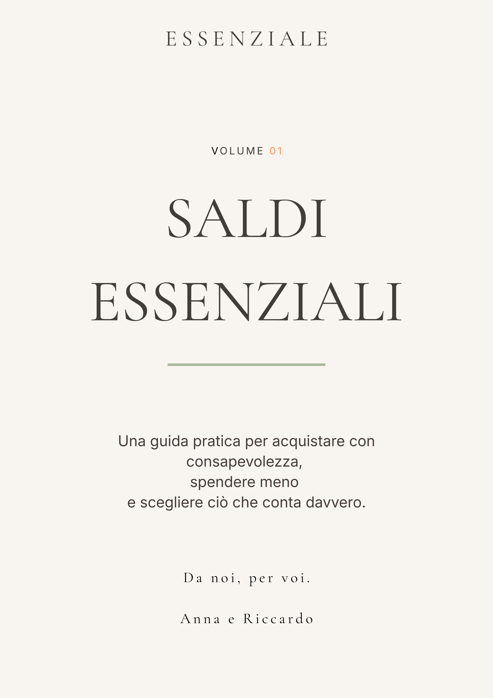

Saldi Essenziali
Il quaderno digitale pensato per aiutare la tua famiglia ad acquistare con più consapevolezza, evitare gli acquisti impulsivi e scegliere ciò che conta davvero.

Cosa troverai all'interno
Ogni pagina è pensata per accompagnarti prima, durante e dopo i saldi con strumenti semplici da utilizzare ogni anno.
✓ Prima di acquistare
Le domande da porti prima di comprare qualsiasi cosa.
✓ Errori da evitare
I meccanismi che ci fanno spendere più del necessario durante i saldi.
✓ La checklist Essenziale
Una pagina da salvare e consultare ogni volta che stai per acquistare.
Sfoglia un'anteprima
Scopri il contenuto del Volume 01 attraverso alcune pagine del Quaderno.


Più di una guida.
Uno strumento pratico da utilizzare ogni volta che arrivano i saldi. Da leggere, compilare e conservare anno dopo anno.
- ✓ 15 pagine curate nei dettagli
- ✓ Checklist prima di acquistare
- ✓ Metodo Essenziale
- ✓ Controllo dell'armadio
- ✓ Lista degli acquisti
- ✓ Budget familiare
- ✓ Metodo per i bambini
- ✓ I 10 errori più comuni
- ✓ La Sfida Essenziale
- ✓ Pagine da compilare e conservare
Il primo Quaderno della collana
4,99 €
✔ Download immediato
✔ PDF stampabile
✔ Accesso immediato dopo l'acquisto
Pagamento sicuro. Ricevi subito il PDF nella tua email.
Il Quaderno completo
Più di una semplice guida: un piccolo strumento pratico da tenere a portata di mano ogni volta che arrivano i saldi. In meno di 20 minuti ti aiuterà a fare acquisti più consapevoli, evitare spese impulsive e scegliere ciò che ha davvero valore.
- ✓ 15 pagine curate con uno stile essenziale
- ✓ Checklist stampabili
- ✓ Esercizi pratici
- ✓ Download immediato in PDF
Da una famiglia all'altra
Per anni anche noi siamo entrati nei negozi convinti di fare un affare. Spesso tornavamo a casa con più cose di quelle che ci servivano davvero. Con il tempo abbiamo imparato che il vero risparmio non è spendere meno. È scegliere meglio. Questo Quaderno nasce dalla nostra esperienza e dal desiderio di condividere un metodo semplice che ci ha aiutato a vivere i saldi con più serenità. Ci auguriamo che possa accompagnare anche la vostra famiglia.
Prima di iniziare
Le domande che riceviamo più spesso prima dell'acquisto.
Quando riceverò il Quaderno?
Subito dopo il pagamento riceverai un'email con il link per scaricare il PDF.
Posso stamparlo?
Sì. Il Quaderno è pensato sia per essere compilato digitalmente sia per essere stampato in formato A4.
È un prodotto fisico?
No. Saldi Essenziali è un Quaderno digitale in formato PDF.
Quali metodi di pagamento posso utilizzare?
Puoi acquistare in sicurezza con carta di credito, debito oppure PayPal.
Posso utilizzarlo ogni anno?
Sì. Il Quaderno è stato progettato per accompagnarti durante ogni stagione dei saldi e può essere conservato e riutilizzato negli anni successivi.